Kolind
Feinkörniger, geschichteter, blauschwarzer Granit mit rotem Einschlag
Größte Höhe: 198 cm
Größte Breite: 125 cm
Dicke ca. : 40 cm
Runenhöhe: 16,5 - 33,5 cm
Runenstein :
Tosti, der Schmied Aswiths, errichtete diesen Stein nach seinem Bruder Tofi, der im Osten den Tod fand.
69 - Kolind - Letztes Update 23.09.2025
Listennummer : DR 108 / DK MJy 42
| Navidaten: 56.36175 10.59123 oder: Kapelvej 1, 8560 Kolind |
Transliteration: tusti : risþi : stin | þąnsi : ift : tufa : is | uarþ (:) tuþr : ustr : burþu|r : sin : smiþr : ąsuiþaR
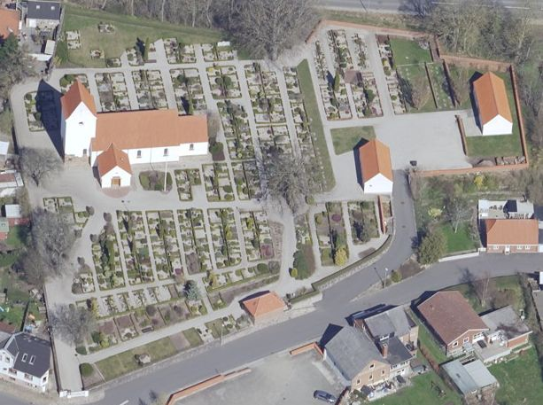
Dies ist ein Luftfoto vom 17.04.2023 von Skråfoto, das die Kirche von Kolind zeigt. Skråfoto ist eine Webanwendung, die von Klimadatastyrelsen weltweit kostenlos bereitgestellt wird - Freie Nutzung unter Beachtung der Lizenz: CC BY 4.0. Die Aufnahmen werden alle zwei Jahre erneuert und neben einer Senkrechtaufnahme wird ein Schrägbild aus jeder Himmelsrichtung angeboten, das man über eine Adresssuche aufrufen kann.
Dieser Stein wurde im Jahre 1868 von Kaplan Erik Begtrup Holst (*16.11.1833 - 16.01.1871, zw. 1861-71 Pfarrer in Lyngby und Albøge - link-LIVES)
 Bildquelle:
Trøst-Hansens sognekort -
Nr.
3140 -
Lizenz:
Public Domain
Bildquelle:
Trøst-Hansens sognekort -
Nr.
3140 -
Lizenz:
Public Domain
entdeckt; als Türschwelle zwischen Waffenhaus und der Kirche Kolind liegend (Die Lyngby Kirche liegt ca. 10 km östlich davon). Im Nationalarchiv in Kopenhagen befindet sich eine undatierte, anonyme Zeichnung mit der Bermerkung "Opdaget 1868" bewahrt, die Kaplan Erik Begtrup Holst zugeschrieben wird und die wohl mit seiner schriftlichen Fundanmeldung per Brief an Prof. Jens Jacob Asmussen Worsaae (*14.03.1821 - 15.08.1885, dänischer Archäologe und Vorgeschichtler - link-LIVES - Bestattungsprotokoll)
 Bildquelle: Fotografie
zw. 1863-1900 von Fotograf Budtz Müller
(*26.12.1837 -
30.12.1884) -
Det Kgl. Biblioteks billedsamling - Lizenz:
Public Domain
Bildquelle: Fotografie
zw. 1863-1900 von Fotograf Budtz Müller
(*26.12.1837 -
30.12.1884) -
Det Kgl. Biblioteks billedsamling - Lizenz:
Public Domain
ging. Auf dessen Veranlassung hin wurde der Runenstein in der Kirche aufgestellt, wo er heute noch steht.
Außerdem existiert ein mit dem Datum 19.12.1869 versehener Brief von Kaplan Erik Begtrup Holst an Prof. P. G. Thorsen (*07.08.1811 - 06.05.1883, Bibliothekar, Runenforscher und Historiker - link-LIVES - Artikel: Levnedsbeskrivelser af de ved Københavns Universitets Firehundredaarsfest promoverede Doktorer, Illustreret Tidende 1882, Nr. 1235 - vom 27.05.1833 / Grabstein in Varde / Eheschließung in Varde am 19. August 1848)
 Fotografie
zw. 1863-1900 von
Fotograf Budtz Müller (*26.12.1837 -
30.12.1884) -
Det Kgl. Biblioteks billedsamling - Lizenz:
Public Domain
Fotografie
zw. 1863-1900 von
Fotograf Budtz Müller (*26.12.1837 -
30.12.1884) -
Det Kgl. Biblioteks billedsamling - Lizenz:
Public Domain
dem wohl ebenfalls eine Zeichnung beigefügt war. Dessen Nachlass (Bezeichnet als: P. G. Thorsens optegnelser, tegninger m.m. vedrørende runer og runemindesmærker - überführt aus der Kopenhagener Universitätsbibliothek 1929 - Gemäß Ministerialschreiben vom 04.03.1929; früher benannt als Additamenta 612 kvart) - findet sich heutzutage in der Königlichen Bibliothek unter NKS 3296 kvart (in mehreren einzelnen Pappschachteln). In der Pappschachtel mit der Nummer 6 fand ich bei meinem Aufenthalt am 28.09.2022 die Zeichnung und den Brief, wovon ich diese Fotografien anfertigen durfte.


Die Zeichnung weist im oberen rechten Eck den (wohl von Prof. P. G. Thorsen angebrachten) Vermerk "22.12.69 fra E. Holst" auf. Der Brief mit der Zeichnung ging offenbar am 22.12.1869 bei Prof. P. G. Thorsen ein, was er mit Bleistift auf dem ersten Blatt des Briefes vermerkte.
Der Runenstein ist in mehrfacher Hinsicht interessant. Oberhalb der Inschrift sind die Reste eines doppelten Spiralornaments erkennbar. Die obere rechte Ecke des Steins ist leider abgeplatzt. Die Inschrift ist darüber nicht beschädigt, einige Verzierungen sind jedoch verloren gegangen. Die Inschrift hat einen Verlauf nach dem sogenannten Bustrophedon (Zeilenweise abwechselnde Schreibweise "hin und her wie ein Ochse beim Pflügen). Die Inschrift verläuft nämlich von links unten nach oben, die zweite Zeile wird von oben nach unten, die dritte Zeile wird wie die erste von unten nach oben und die vierte Zeile wieder von oben nach unten gelesen. Es wurde diskutiert, ob sich smiðr ÁsviðaR auf den Steinerrichter/Runenritzer (sogenanntes Umrahmungsprinzip, siehe Danmarks Runeindskrifter, Text, Spalte 873-4) oder auf den Verstorbenen bezieht, wobei man normalerweise den Akkusativ smið erwartet hätte. Freie Appositionen im Nominativ kommen jedoch durchaus vor (vgl. Nielsen, Karl Martin (1907-1987) - Omramning eller fri apposition i runeindskrifter - Arkiv för nordisk filologi. 60 - Lund - 1945 - S.73-91).
Ferner ist es der einzige dänische Runenstein , der eine Fahrt nach Osten unmittelbar erwähnt.
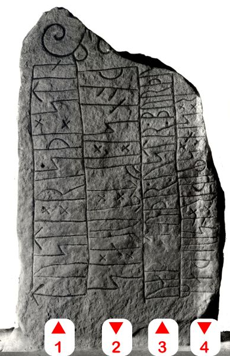
Bildquelle: Fotograf Erik Moltke - Digitale Sammlung Nationalmuseum Kopenhagen - Lizenz: CC-BY-SAIn den beiden großen dänischen Runenwerken wird der Stein natürlich ausführlich abgehandelt.
Prof. P. G. Thorsen hat in seinem Runenwerk "De danske runemindesmærker beskrevne og forklarede, anden Afdeling, Jyllands Runemindesmærker, Afbildninger og Text, I. Afbildninger, 1879" unter der Nr. 41 diese Zeichnung von Prof. Julius Magnus Petersen (*04.09.1827 - 31.01.1917, Archäologischer Zeichner und Restaurator - link-LIVES - Bestattungsprotokoll)
 Bildquelle: Fotografie
von 1903 von Fotograf Marius Christensen
(*24.06.1874 -
25.06.1907) -
Det Kgl. Biblioteks billedsamling - Lizenz:
Public Domain
Bildquelle: Fotografie
von 1903 von Fotograf Marius Christensen
(*24.06.1874 -
25.06.1907) -
Det Kgl. Biblioteks billedsamling - Lizenz:
Public Domain
veröffentlicht.
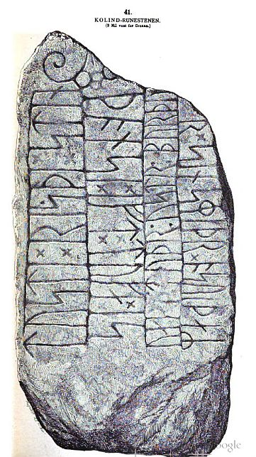
In seinem im Jahr 1880 erschienenen Band II / Text macht er auf den Seiten 121-122 Ausführungen zu diesem Runenstein.
In seinem oben bereits erwähnten Nachlass fand ich bei meinem Besuch in der Königlichen Bibliothek in Kopenhagen in der Pappschachtel mit der Nummer 17 auch noch diese tolle Zeichnung von Prof. Julius Magnus Petersen, die er auf den 24.06.1870 datiert hat.

Prof. Ludv. F. A. Wimmer (*07.02.1839 - 29.04.1920, Philologe und Runenforscher - link-LIVES - Politiets registerblade - Bestattungsprotokoll)
 Bildquelle:
Fotografie zw. 1877-1900 von Fotograf Hansen & Weller
-
Det Kgl. Biblioteks billedsamling - Lizenz:
Public Domain
Bildquelle:
Fotografie zw. 1877-1900 von Fotograf Hansen & Weller
-
Det Kgl. Biblioteks billedsamling - Lizenz:
Public Domain
bringt seine Studien in seinem großformatigen Runenwerk "De danske runemindesmærker undersøgte og tolkede af Ludv. F. A. Wimmer, Band I.2 - De historiske runemindesmarker, 1895" unter der Nr. 15, S. 135 - eigener Scan. Er hat den Runenstein persönlich vor Ort am 01. September 1877 untersucht. Bei seiner Interpretation der Inschrift ließ er sich allerdings von Wunschvorstellungen leiten und ordnete das Ereignis im Zusammenhang mit der Schlacht bei Svold ein. Bereits seine Nachfolgerin im Amt, Dr. Lis Jacobsen (*29.01.1882 - 18.06.1961, dänische Runologin und Archäologin -link-LIVES - Taufe - Melderegister - Hochzeit)
 Bildquelle:
Wikipedia - Lizenz:
Public Domain
Bildquelle:
Wikipedia - Lizenz:
Public Domain
hat in mehreren Artikel gegen dessen fantasievollen Deutungen Stellung bezogen - siehe unter Sjelle.
Auch hier wurde von Prof. Julius Magnus Petersen (*04.09.1827 - 01.02.1917, Archäologischer Zeichner und Restaurator) eine Zeichnung aufgenommen, die ich hier wiedergeben möchte:
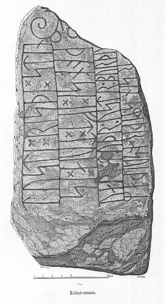
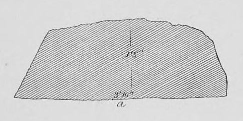
Prof. Ludv. F. A. Wimmer hat seine jahrelangen Aufzeichnungen der
"Kgl.
Bibliotek" in
Kopenhagen überlassen. Ein
Verzeichnis darüber wurde 1915 in Buchform herausgegeben
-
In seinen Unterlagen in der Königlichen Bibliothek befinden sich unter "III - Originaltegninger af de danske Runemindesmærker, udførte paa Undersøgelsesrejserne af Magn. Petersen og kontrollerede paa Stedet af Ludv. Wimmer, samt Prøvetryk af de paa Grundlag af de nævnte Tegninger, Aftryk o. s. v. til De danske Runemindesmærker" udførte Afbildninger med Wimmers Rettelser"


zu dem Runenstein von Kolind unter der Nr. 15 Aufzeichnungen von 1877, wobei ich am 27.09.2022 diese Zeichnung von Prof. Julius Magnus Petersen - datiert auf den 01.09.1877 - fotografieren durfte.

Erik Moltke (*04.04.1901 - 19.10.1984, Runologe, Historiker - link-LIVES)
 Bildquelle: Scan von Buchumschlag "Runerne i Danmark og ders
oprindelse" - Erik Moltke - 1976 - Lizenz:
CC-BY-SA
Bildquelle: Scan von Buchumschlag "Runerne i Danmark og ders
oprindelse" - Erik Moltke - 1976 - Lizenz:
CC-BY-SA
hat dieses Foto am 02.08.1930 aufgenommen.
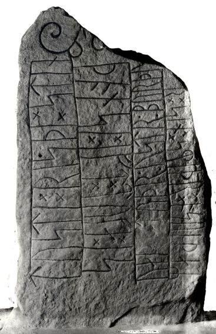
Digitale Sammlung Nationalmuseum Kopenhagen - Lizenz: CC-BY-SA
Im Vorfeld zu dem 2016 erschienenen Buch von Lisbeth M. Imer (*1973, Runologin am Nationalmuseum Kopenhagen) "Danmarks Runesten - en fortælling" reiste sie mit dem Fotografen Roberto Fortuna zur Bestandsaufnahme durch die Lande. Dieser hat die Runensteine mit Schräglicht aufgenommen und darüber wirklich herausragende Fotos erzielt. Diese Fotografie stammt aus dem März 2012.
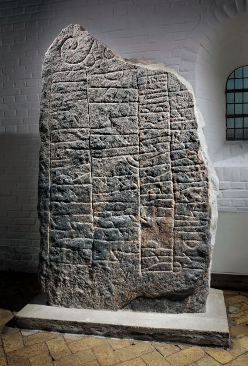
Digitale Sammlung Nationalmuseum Kopenhagen - Lizenz: CC-BY-SA
Erstmals war ich am Samstag, 10.08.1991 in Kolind - siehe Foto linker Frame. Am Donnerstag, 25.08.2016, fand ich dann erneut den Weg nach Kolind. Leider war die Kirche verschlossen. Aber Dank der Infotafel, die an jeder Kirche in Dänemark Auskunft zum Priester, Küster usw. gibt, war es mir möglich den Küster (Graver) telefonisch vor Ort zu bitten. Nach anfänglichem Zögern - es war schon knapp 18 Uhr - kam er dann doch vor Ort - Besten Dank dafür! Die Fotos der Kirche / Runensteine habe ich hier:
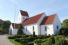 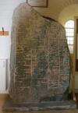 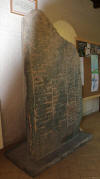 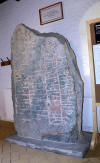


Im Rahmen meiner 2022er Jütland Wikinger Tour war ich nun nochmals am Mittwoch, 15.06.2022, in Kolind um die Kirche zu besuchen. Dabei hatte ich ausführlich Zeit für diese Fotos gehabt.
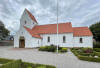 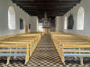 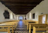 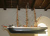 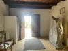


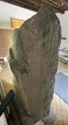 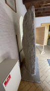 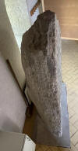 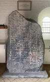 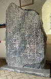 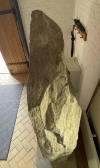 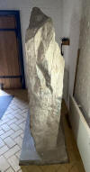 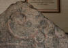


Die dänische Runendatenbank im Internet hat hier Infos zu diesem Runenstein.
Der entsprechende Eintrag in "Fund og Fortidsminder" ist hier verlinkt. Darin ist inzwischen auch dieser Zustandsbericht aus 2018 des Steinrestaurators Leif Vognsen eingebunden.
Über diesen Link finden sich zu dem Runenstein Informationen des Forschungsprojektes "Runes" der Akademie der Wissenschaften zu Göttingen.
Über die Webseite "www.biopix-foto.de" findet sich über diesen Link ein hochauflösendes Foto des Steins mit rot eingefärbten Runen, was eine deutlich verbesserte Erkennbarkeit mit sich bringt.
Auf der Webseite von Jonas Lau Markussen findet sich dieser Eintrag zum Runenstein von Kolind mit einer Zeichnung der Inschrift/Ornamentik.